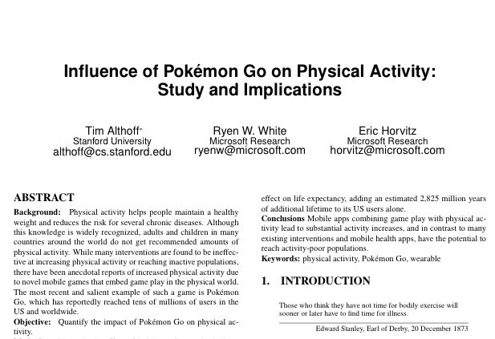

October 2016
"But sometimes, simple specifications just mean hidden complexity." -- @nst021 twitter.com/jennybryan/sta…
The tutorial program for #SWAT4LS in early Dec looks great swat4ls.org/workshops/amst… Thx @CMWallberg for the pointer #semanticweb #linkeddata
Here we go - research paper about the positive effect of Pokémon Go arxiv.org/abs/1610.02085 via @nicolastorzec

Registerad på "Frukostseminarium om microservices" 23 Nov, Göteborg, @3gammagroup eventbrite.co.uk/e/valkommen-pa…
Very nice use! Will use the api.opentrials.net/v1/docs/#!/tri… endpoint to look-up @opentrials id:s using sponsor/registry trial study codes. twitter.com/opentrials/sta…
For the record: @MikeAtherton is "Content Strategist at @FacebookLondon" #LinkedData twitter.com/aaranged/statu…
"Linked (meta-) Data in operation. I think this will bring great power to what we do. Just need to set it up" -- Dave I-H. Very nice! twitter.com/Assero_UK/stat…
Following #iswc2016 @ISWC2016 iswc2016.semanticweb.org Kobe, Japan this week. Remember lovely Riva del Garda 2014 storify.com/kerfors/iswc20…
Google News introduces fact check feature, just in time for US election theguardian.com/technology/201… uses #schemaorg via @goude
“Chainpoint: a standard blockchain proof protocol” by @WayneVaughan medium.com/@WayneVaughan/… uses #jsonld #linkeddata
Yepp. Way back in time many thought "it's complicated" also about things like 3:e NF, PK/FK, ERD, relational algebra, ... #phuse16 twitter.com/NovasTaylor/st…
Sorry I can't be there. Will follow #OTHackday #OpenTrials today. Good luck with the launch next week. twitter.com/opentrials/sta…